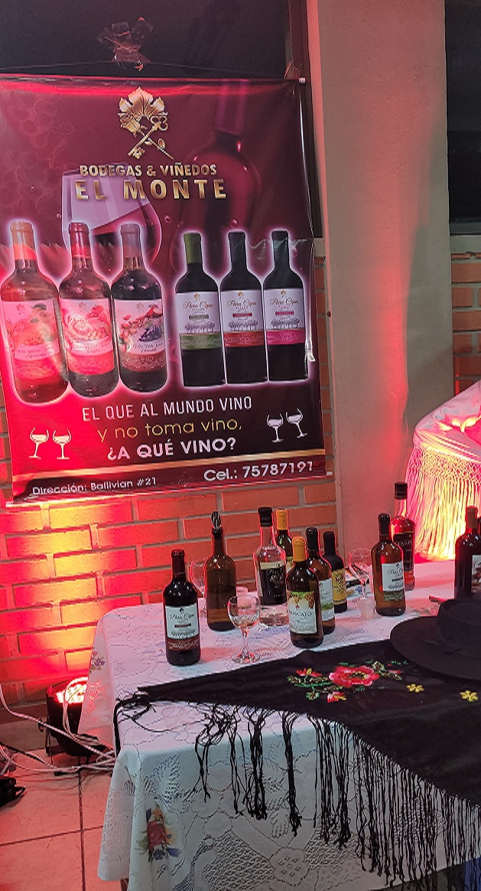
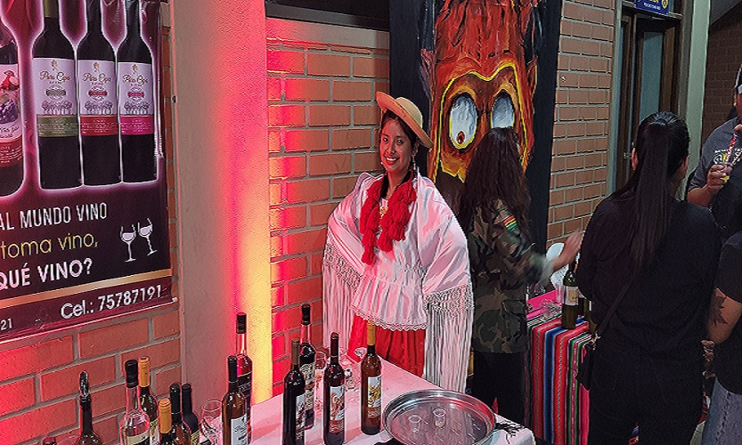
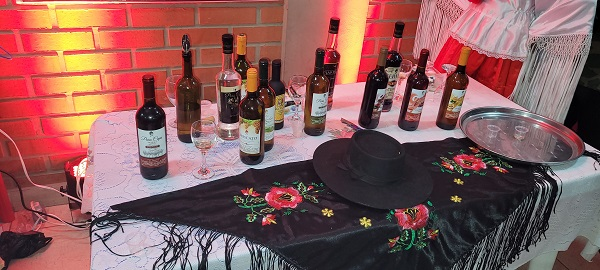

BODEGAS VINOS EL MONTE
BODEGA Y VIÑEDO EL MONTE
Ubicada en la direccion Ballivian #21 Para reservas o pedidos al cel.:75787191

BODEGA Y VIÑEDO EL MONTE
El stan de la bodega viñedo el monte presento diversidad de vinos, para diferentes tipos de gustos.
tipos de vino que presento son:
- vino tinto
- vino dulce
- vino de mesa
|

con los precios de:
- Vino tinto BS 35
- Vino dulce BS 30
- Vino de mesa BS 30
|
